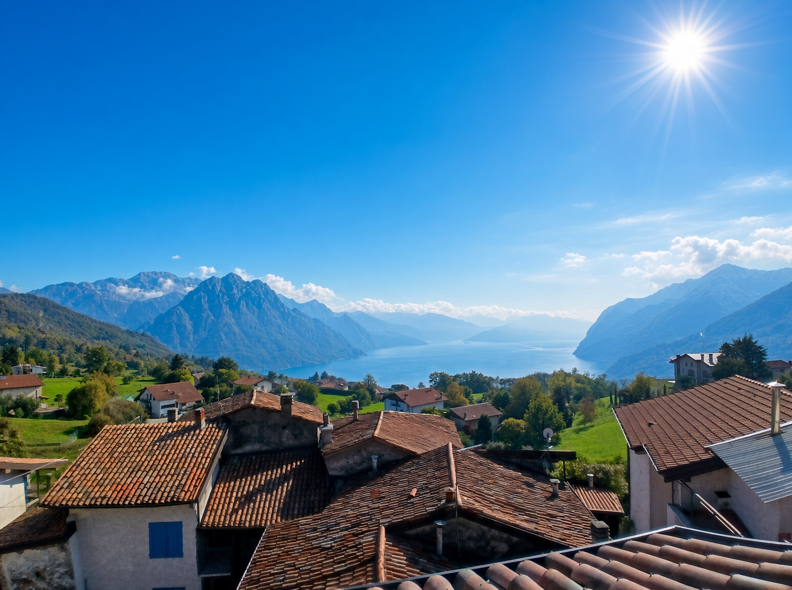

I nostri appartamenti

Piano Terra
Ingresso indipendente e cortile esclusivo. Cucina/soggiorno, camera matrimoniale, camera doppia e bagno.
Vedi foto e servizi
Piano Primo
Accogliente e luminoso, con balcone. Ideale per famiglie o coppie.
Vedi foto e servizi
Secondo Piano
Con balcone e terrazza. Fascino e comfort con vista sul lago d'Iseo.
Vedi foto e servizi